Quantum Master Equation¶
The game of quantum master equations is presented in this lecture notes.
Quantum Master Equation¶
Important
In quantum mechanics, probability is not complete. We need density matrix.
Quantum mechanics observables are averaging over all density matrix elements,
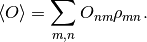
For diagonalized density matrix, this averaging becomes the ordinary probability averaging.
However, even if we start with a diagonalized density matrix, the averaging procedure won’t stay on the classical averaging procedure as time goes on. Off diagonal elements can be created out of the diagonal elements.
In that sense, it’s not even possible to use the classical master equation to solve most quantum problems. We need the quantum master equation.
The first principle of quantum mechanics is
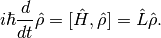
Then the question is, as the first idea, how to derive an equation for the probability.
Pauli’s Mistake¶
Pauli derived the first quantum master equation which is not quite right.
The solution to a quantum system is
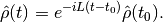
In Heisenberg picture,
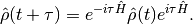
The diagonal elements of density matrix are
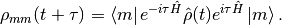
The left hand side is the probability, 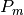. Right had side becomes
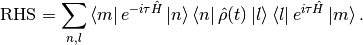
Here is where Pauli’s idea comes in. He assumed that the system is dirty enought to have repeatedly recurance of diagonalized density matrix. Then he use diagonalized density matrix to calculate the probability,
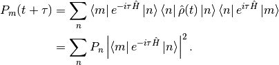
The term 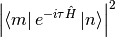 RHS is the probability of a state n to be at state m after a short time  . We’ll define this as 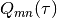.
. We’ll define this as 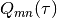.
So in short the probability is
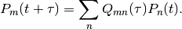
Then we can repeat the Chapman method to derive a master eqution.
Important
However, the Pauli assumption is basically the Fermi golden rule which requires a infinite amount of time. This is obviously not valid for an master equation system.
Then it comes the van Hove derivation.
van Hove’s Derivation¶
van Hove argued that Pauli’s result is nonsense. He started with
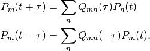
The key point is that 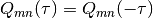,
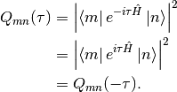
Without any calculations, we just know imediately that
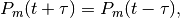
in other words, there’s no evolution of probability density.
van Hove¶
Important
van Hove made a great progress by bringing up the following questions.
- What systems can be described by master equations?
- What’s the time scale for quantum master equation to be valid?
- How to derive a quantum master equation?
Suppose we have a quantum system with Hamiltonian,
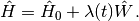
van Hove’s idea was that quantum master equations can describe systems with diagonal singularity conditions.
Then he said, the time scale of the system should be long enough, the perturbation should be as small as the condition 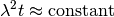.
Warning
This looks weird to me because I can not see why this is good for an approximation.
So we can write down the diagonal elements
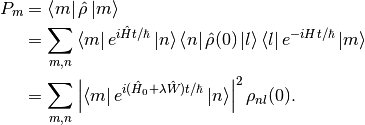
van Hove applied random phase condition for only initial condition, 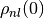 is diagonalized at initial 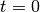.
Then we have
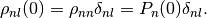
Put this result back to the probability,
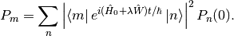
Then use the whole Dyson series then selectively make some terms zero and use the assumptions to derive a master equation.
Zwawzig and Nakajiwa¶
They invented the projection technique.
First of all define a diagonalizing operator 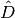 which just keeps the diagonal elements and simply drops the off diagonal elements. We see that 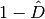 will element all diagonal elements.
We can define the diagonalized density matrix as 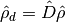 and off-diagonalized density matrix as 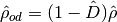. As an application,
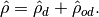
Starting from the von Neumann equation,
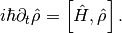
By using the Liouville operator,
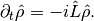
Apply and to the von Neumann equation,
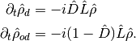
Use the relation that 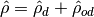, we have
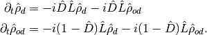
Solve the second equation using Green function technique,
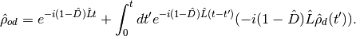
Hint
Recall that the solution for
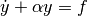
is
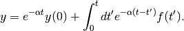
Insert this solution to the equation of 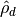,
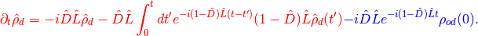
What happened to the blue term? It disapears when we apply the initial random phase condition.
When it happens we get our closed master equation for , which is an equation for the probability.
About Off-diagonal Elements¶
Though we need to set 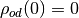 to have a closed master equation, that doens’t mean we have to make only localized initial condition on only one state.
“We can always use phasers.”
—V. M. Kenkre
Suppose we have a system with five possible states, the off-diagonal elements don’t exist initially if the system is in only one state.

The density matrix will contain off-diagonal elements if we have two states initially.

However, we can always choose a combination of the states to use as the basis, so that the density matrix becomes diagonalized.
Simplify Quantum Master Equation¶
We derived some sort of quantum master equation using projection method. Here we will simplify it.
Let’s stare at the results for a minute.
By definition, 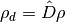. So what is 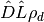?
![\hat D \hat L \rho_d & = \hat D\hat L \hat D \hat \rho \\
& = \hat D \left[ {\color{magenta} \begin{pmatrix}\rho_{11} & 0 & 0 & \cdots \\ 0 & \rho_{22} & 0 & \cdots \\ 0 & 0 & \rho_{33} & \cdots \\ \vdots & \vdots & \vdots & \ddots \end{pmatrix} \begin{pmatrix} H_{11} & H_{12} & H_{13} & \cdots \\ H_{21} & H_{22} & H_{23} & \cdots \\ H_{31} & H_{32} & H_{33} & \cdots \\ \vdots & \vdots \vdots & & \ddots \end{pmatrix} } - {\color{green} \begin{pmatrix} H_{11} & H_{12} & H_{13} & \cdots \\ H_{21} & H_{22} & H_{23} & \cdots \\ H_{31} & H_{32} & H_{33} & \cdots \\ \vdots & \vdots \vdots & & \ddots \end{pmatrix} \begin{pmatrix} \rho_{11} & 0 & 0 & \cdots \\ 0 & \rho_{22} & 0 & \cdots \\ 0 & 0 & \rho_{33} & \cdots \\ \vdots & \vdots & \ddots & \cdots \end{pmatrix} } \right]](../_images/math/14143cc283342e9df7e0dc7df1093c1ab03b9f35.png)
We can easily see that the diagonal elements are equal for the two terms (magenta and green) in the braket so all the diagonal elements go away. Now when the outside of the bracket applied, the whole term is zero.
We are so lucky to eliminate the term 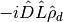.
We do perturbation theory most of the time. Consider the case that Hamiltonian of the system is 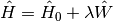. We can split the Liouville operator into two parts, :math:`hat L = hat L_0 + lambda hat L_W `.
Our master equation becomes
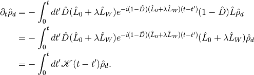
in which 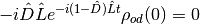 (initial condition), 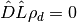 (just proved).
We have the definition
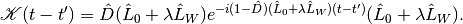
In weak coupling interaction, 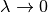, we can put  in the exponential.
in the exponential.
![\mathscr K(t-t') &= \hat D (\hat L_0 + \lambda \hat L_W ) e^{-i(1-\hat D) (\hat L_0 + \lambda \hat L_W ) (t-t')} (\hat L_0 + \lambda \hat L_W ) \\
&= \hat D (\hat L_0 + \lambda \hat L_W ) e^{-i(1-\hat D) \hat L_0 (t-t')} (\hat L_0 + \lambda \hat L_W ) \\
&= \hat D \hat L_0 e^{-i(1-\hat D) \hat L_0 (t-t')} \hat L_0 + \lambda \hat D \hat L_0 e^{-i(1-\hat D) \hat L_0 (t-t')} \hat L_W \\
\phantom{\mathscr K(t-t')} & \phantom{{} = } + \lambda \hat D \hat L_W e^{-i(1-\hat D) \hat L_0 (t-t')} \hat L_0 + \lambda^2 \hat D \hat L_W e^{-i(1-\hat D) \hat L_0 (t-t')} \hat L_W \\
&= \lambda^2 \hat D \hat L_W e^{-i(1-\hat D) \hat L_0 (t-t')} \hat L_W \\
&= \lambda^2 \hat D \hat L_W e^{-i\hat L_0 (t-t')} \hat L_W .](../_images/math/b8298d96205123436ce9c72b559288da015d2b40.png)
I dropped several terms even the first order of  . This has been done correctly because the interaction term can be very different from the zeroth order. [1]
. This has been done correctly because the interaction term can be very different from the zeroth order. [1]
With a lot of terms being disappears, we can now start to look at the numbers which ia the density matrix elements sandwiched between states,
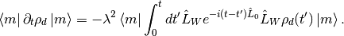
Hint
Here is an useful relation,
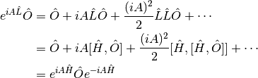
Notice that 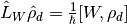. Define .
![\bra{m} \partial_t \rho_d \ket{m} &= -\lambda^2 \bra{m} \int_0^t dt' [\hat W, e^{-i(t-t')\hat L_0}[\hat W, \rho_d(t')]] \ket{m} \\
& = -\lambda^2 \bra{m} \int_0^t [\hat W, ] dt' \ket{m} \\
& = -\lambda^2 \left( \bra{m} \int_0^t dt' \hat W\hat{\mathscr M} \ket{m} - \bra{m} \int_0^t \hat{\mathscr M}\hat W\ket{m} dt' \right) \\
& = -\lambda^2 \int_0^t dt' \left( \bra{m} \hat W\hat{\mathscr M} \ket{m} - \bra{m} \hat{\mathscr M}\hat W\ket{m} \right) \\
& = -\lambda^2 \int_0^t dt' \sum_n (W_{mn}\mathscr M_{nm} - \mathscr M_{mn}W_{nm}).](../_images/math/39fe3e6e0b220b22cf1260ff3c8924af8575e006.png)
We know that . So the master equation becomes
The eigen function of the system is
With this result we can calculate the matrix elements,
![\mathscr M_{mn} &= \bra{m} e^{-i(t-t')\hat H_0}[\hat W,\hat \rho_d]e^{i(t-t')\hat H_0} \ket{n} \\
& = e^{-i(t-t')\epsilon_m} \bra{m} [\hat W, \hat \rho_d] \ket{n} e^{i(t-t')\epsilon_n} \\
& = \sum_\mu e^{-i(t-t')\epsilon_m} (\bra{m} \hat W \ket{\mu} \bra{\mu} \hat \rho_d \ket{n} - \bra{m} \hat \rho_d \ket{\mu}\bra{\mu} \hat W \ket{n} )e^{i(t-t')\epsilon_n} \\
& = \sum_\mu e^{-i(t-t')\epsilon_m} (W_{m\mu}\rho_{\mu n} - \rho_{m\mu}W_{\mu n}) e^{i(t-t')\epsilon_n} \\
& = e^{-i(t-t')\epsilon_m} ( W_{mn}P_{n} - P_{m}W_{m n} ) e^{i(t-t')\epsilon_n} .](../_images/math/1c95c5632d56342ee1daa01642a544ba2bff4329.png)
Finally we have our quantum master equation,
![\partial_t P_m &= -\lambda^2 \int_0^t dt' \sum_n \left[ ( W_{mn} e^{-i(t-t')\epsilon_n} ( W_{nm}P_{m} - P_{n}W_{n m} ) e^{i(t-t')\epsilon_m}) - (e^{-i(t-t')\epsilon_m} ( W_{mn}P_{n} - P_{m}W_{m n} ) e^{i(t-t')\epsilon_n} )W_{nm} \right] \\
& = -\lambda^2 \int_0^t dt' \sum_n \left[ ( W_{mn} e^{-i(t-t')(\epsilon_n - \epsilon_m ) } W_{nm} (P_{m} - P_{n}) - (e^{-i(t-t')\epsilon_m} ( W_{mn}P_{n} - P_{m}W_{m n} ) e^{i(t-t')\epsilon_n} )W_{nm} \right] \\
& = -2 \lambda^2 \int_0^t dt' \sum_n \left\vert W_{mn} \right\vert^2 \left[ P_n- P_m \right] \cos((\epsilon_m-\epsilon_n)(t-t'))](../_images/math/86388cc7aa7a23032e871468905e737418a8a817.png)
which is actually the Fermi’s golden rule.
Define  , we can write the master equation into a really simple form,
, we can write the master equation into a really simple form,
Markovian - Kenkre Approach¶
We can simplify the equation more using Markovian approximation,
We can see that the Laplace transform of this is really simple,
Hint
Laplace transform of integral and delta function are
So we have the Laplace transform of on both sides,
![\tilde \Omega_{mn}(\epsilon) & = \int_0^\infty dt e^{-\epsilon t} \delta(t) \int_0^t d\tau \Omega_{mn}(\tau) \\
& = \int_0^\infty \frac{1}{-\epsilon} \delta(t) \int_0^t d\tau \Omega_{mn}(\tau) d e^{-\epsilon t} \\
& = \frac{1}{\epsilon} \int_0^\infty e^{-\epsilon t} d\left(\delta(t) \int_0^t d\tau \Omega_{mn}(\tau) \right) \\
& = \frac{1}{\epsilon} \int_0^\infty e^{-\epsilon t} \int_0^t d\tau \Omega_{mn}(\tau) d\left(\delta(t) \right) + \frac{1}{\epsilon} \int_0^\infty e^{-\epsilon t} \delta(t) d\left( \int_0^t d\tau \Omega_{mn}(\tau) \right) \\
& = \frac{1}{\epsilon} \int_0^\infty e^{-\epsilon t} \delta(t) \Omega_{mn}(t) dt \\
& = \frac{1}{\epsilon} \Omega_{mn}(0)](../_images/math/a919cc4839f36145e04e664835b1043af77f76c8.png)
Warning
Derive the Fermi’s golden rule from this.
Finally we can reach Fermi’s golden rule.
Markovian - Another Approach¶
I’ll put all the :math:`hbar`s back into the equations in this subsection.
I read the Markovian idea on quantiki [2] . Here is my derivation of Fermi’s golden rule from quantum master equation using this approach.
First of all, we can use interaction picture. Master equation here can be rewritten using interaction picture.
![\partial_t P_m & = -\lambda^2/\hbar^2 \int_0^t dt' \sum_n \left[ ( W_{mn} e^{-i(t-t')(\epsilon_n - \epsilon_m ) /\hbar } W_{nm} (P_{m} - P_{n}) - (e^{-i(t-t')\epsilon_m/\hbar} ( W_{mn}P_{n} - P_{m}W_{m n} ) e^{i(t-t')\epsilon_n/\hbar} )W_{nm} \right] \\
& = -\lambda^2/\hbar^2 \int_0^t dt' \sum_n \left[ ( e^{it\epsilon_m/\hbar}W_{mn} e^{-i t \epsilon_n/\hbar } e^{it'\epsilon_n/\hbar} W_{nm} e^{-it'\epsilon_m/\hbar} (P_{m} - P_{n}) - (e^{it\epsilon_m/\hbar} W_{mn} e^{-it\epsilon_n/\hbar} (P_{n} - P_{m}) e^{it'\epsilon_n/\hbar} )W_{nm} e^{-it'\epsilon_m/\hbar} \right] \\
& = -\lambda^2/\hbar^2 \sum_n \left[ \int_0^t dt' W_{mn}^I W_{nm}^I(P_m-P_n) - \int_0^t dt' W_{mn}^I W_{nm}^I(P_n-P_m) \right]](../_images/math/93af3c95ef24b2d496122e47d5a1d659daa83cb5.png)
Markovian means there is no dependence on the past, in other words, the two point correlation in time is non-zero only when the two time are equal in the correlation function, for all . In our master equation case,
Hint
This is corresponding to the Kenkre definition of Markovian.
So our master equation becomes
![\partial_t P_m(t) &= -\frac{\lambda^2}{\hbar ^2} \sum_n(P_m - P_n) \left[ \lim_{t\rightarrow \infty} \left( \int_0^t dt' e^{i(t-t')\epsilon_m/\hbar} W_{mn} e^{-i(t-t')\epsilon_n/\hbar} W_{nm} + \int_0^t dt' e^{-i(t-t')\epsilon_m/\hbar} W_{mn} e^{i(t-t')\epsilon_n/\hbar} W_{nm} \right) \right] \\
& = -\frac{\lambda^2}{\hbar^2} \sum_n (P_m - P_n) \left[ \lim_{t\rightarrow \infty} \left( \frac{\left| W_{mn}\right|^2 }{i\omega_{nm}} \left( e^{-it\omega_{mn}} - e^{it\omega_{mn}} \right) \right) \right] \\
& = -\frac{\lambda^2}{\hbar^2} \sum_n (P_m - P_n) \left[ 2\left| W_{mn}\right|^2 \lim_{t\rightarrow \infty} \left( \frac{i\sin(\omega_{mn}t)}{i\omega_{nm}} \right) \right] \\
& = \sum_n (P_m - P_n) \left[ \frac{2 \pi \lambda^2 \left| W_{mn}\right|^2 }{\hbar^2} \lim_{t\rightarrow \infty} \left( \frac{\sin(\omega_{mn}t)}{\pi\omega_{nm}} \right) \right]](../_images/math/ced0a166eae047ac34b868802c5b4740f0694862.png)
Important
We have the following expression,
Using this expression of delta, we derived the Fermi’s golden rule.
Comparing this result with the classical master equation, we can find out the transition rate,
which is exactly the Fermi’s golden rule.
{kind=link}